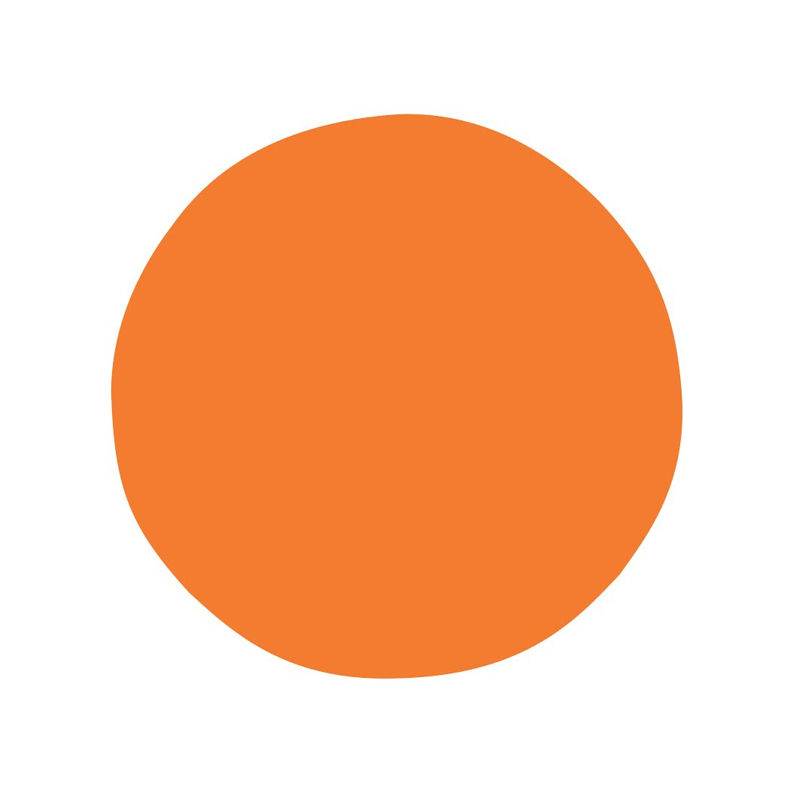

Mental Health Resources
Helpful links and support services you can trust.
Mind (UK)
Provides advice and support for anyone experiencing a mental health problem. Offers tools and campaigns for awareness.
Take Me ThereMental Health Foundation
Focuses on prevention, mental health research, and building public understanding through accessible resources.
Take Me ThereCALM (Campaign Against Living Miserably)
Leads campaigns and provides support services to reduce suicide rates, especially among men.
Take Me There

Headspace
A digital platform offering guided meditations, mindfulness exercises, and tools for managing stress and sleep.
Take Me There
Feeling Disconnected or Withdrawn?
When you're low or overwhelmed, it’s natural to want to be alone. But staying connected in small ways can really help your mind and mood.
🤠Gentle Ways to Reconnect
🌱 Why It Matters
Take your time. Reconnection doesn’t have to be big or fast — just honest. If you need support, visit our Need to Talk section.